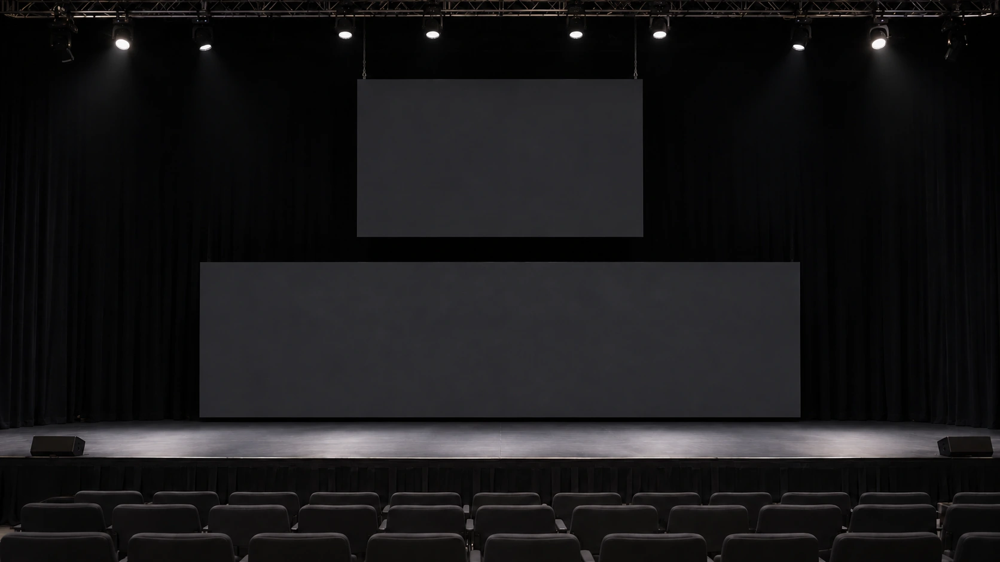

仕込みは、工程をつなぐ準備。
搬入から設営、確認まで。前後の担当と作業範囲をそろえて、工程を組み立てます。
本番中の対応範囲を決める。
連絡先、待機場所、対応を依頼する手順。本番前に、誰に何を伝えるかを明確にします。
撤去までを、ひとつの段取りに。
終了後の作業開始条件と搬出順を共有。最後の工程まで必要な役割を整理します。
01 / 画面の構成
横長のLEDを、仕込みから撤去まで。
下部の横長LEDまわりを担当。上部にも独立した映像画面がありますが、その方式・担当は本事例の範囲に含めていません。
- GP2.6
- Tessera SX40
- VIO4K
映像が届く、その裏側へ
ひとつの映像を、
2つの系統で届ける。
下部LEDを支える構成をたどる。
機材の名前が、役割に変わる。
HDMI映像 × 1
分配器の2出力へ
Theatrixx HDMI1:4下部LED画面
GP2.6
HDMI信号を分配し、2系統へ送ります。
光の動きは信号経路の説明です。実際の映像・遅延・画面領域・配線を再現していません。
素材・画面構成・担当してほしい範囲から、必要な技術スタッフと機材を整理します。
機材と担当範囲を詳しく見る
入力のHDMI信号をTheatrixx HDMI1:4で2系統に分配し、それぞれVIO4K、Tessera SX40を経由してGP2.6へ送る構成です。
A・Bは説明用の呼び分けです。左右の表示領域やメイン・予備の関係は示しません。接続端子、配線本数、同期設定を省略した構成説明図であり、結線指示書ではありません。
本事例のLOTUS担当は下部LEDまわりです。上部の画面や現場全体の一括担当、同期不具合を現場で解決した実績を示すものではありません。
同じ役割を依頼するときの参考情報
PLAN THE NEXT FIELD
機材と人。
両方から、現場を組み立てる。
ここからは、同種の業務を相談するための一般的な検討例です。
この事例で実際に使った機材・人数・体制を示すものではありません。
機材の役割から考える
特定機種の採用・保有・対応可否を保証するものではありません。実際の構成、電源・支持・適合条件は個別に確認します。
必要なスタッフの役割を考える
設営・本番対応・撤去
工程ごとの担当範囲、待機と交代の条件を確認します。
技術責任者・進行担当
判断窓口と本番中の連絡経路を整理。映像の再生・切り替え担当との分担も必要です。
人数や兼任の可否は、規模・作業時間・運用条件によって変わります。LOTUSの担当範囲は相談時に確認します。
相談前に、押さえたい3点
- 01工程ごとの開始・終了時刻
- 02本番中に求める対応
- 03撤去の合図と搬出順
03 / YOUR NEXT SHOW
次の現場を、
一緒に具体化する。
すべてが決まっていなくても大丈夫です。
分かっていることから、お聞かせください。
ビジュアルについて
原資料で確認できた機材の配置や画面構成をもとに制作した再構成ビジュアルです。実績写真ではありません。画面内容・背景・照明・支持部は説明用です。実際の施工方法や機器の正確な外観を保証するものではありません。
機材の役割も知りたい方へ
以下は機材の役割を知るための参考ページです。この事例の使用機材や、同等品の指定ではありません。
LEDプロセッサーの役割を見る ↗